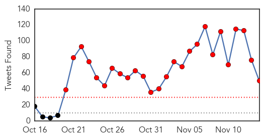
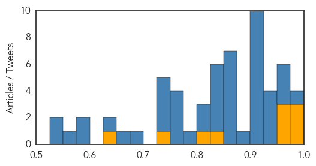
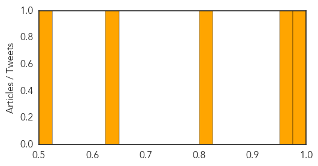

Ebola
30-Day Web Trend
0 alerts, 0 warnings

30-Day Twitter Trend
26 alerts, 0 warnings

Article Locations

Article Confidences
Top Articles:
- 0.998
- Ebola has gone underground – will it return to Sierra Leone?
- 0.996
- When Will The True Ebola Heroes Be Recognised? -By Moshood Isah
- 0.994
- Ebola remains in Guinea, where the outbreak began
- 0.967
- Building Defences Against Future Ebola Outbreaks
- 0.967
- A system that failed
- 0.963
- Brazilian tests negative for Ebola virus a second time
- 0.848
- U.S. Applying Strict Ebola Screening At 5 Airports
- 0.821
- Migration Crisis Becomes Public Health Crisis
- 0.740
- Meet the woman who took 51 Ebola orphans into her own home
- 0.640
- ‘Merciless,’ spread of Ebola in Liberia must be stopped in its tracks, Security Council told
Top Tweets:
- 0.984
- FREE Ebola Virus Vaccines U.S. Hospitals offering free Ebola to people want FREE Ebola? INFO https://t.co/fjWTZJsteV
- 0.963
- Public Health Advisory Ebola Guidance - https://t.co/h2ZhZZux63 ebola
- 0.961
- Weekly Digest: Meningitis A vaccine success; Sierra Leone declared free of Ebola - https://t.co/37vHlFCl8Y ebola
- 0.955
- Interferon-γ Inhibits Ebola Virus Infection. - https://t.co/CROdN8Bb6z ebola
- 0.933
- A Closer Look: The Ebola Outbreak - https://t.co/HadoCWYKmo ebola
- 0.931
- Guinea releases last 68 people from Ebola quarantine - Reuters https://t.co/l4tNynyFtI ebola EVD
- 0.931
- Guinea releases last 68 people from Ebola quarantine - Reuters https://t.co/f5lM4IlbGu ebola EVD
- 0.928
- Guinea releases last 68 people from Ebola quarantine - Yahoo News https://t.co/9yj6P2o0kB ebola EVD
- 0.924
- Liberia after Ebola - https://t.co/yknKHOaeRO ebola
- 0.924
- Guinea releases last 68 people from Ebola quarantine - https://t.co/fv1o695v4N ebola
- 0.921
- Brazilian tests negative for Ebola virus a second time - https://t.co/bTtCe4AsW9 ebola
- 0.921
- Brazilian tests negative for Ebola virus a second time - https://t.co/HGjQycB65P ebola
- 0.919
- Columbia University researchers map Ebola spread in Sierra Leone - https://t.co/lERq8s0taP ebola
- 0.911
- Sierra Leone Is Officially Ebola-Free - https://t.co/eMph10cvyf ebola
- 0.909
- FREE Ebola Virus Vaccines U.S. Hospitals offering free Ebola would you? INFO https://t.co/fjWTZJsteV DemDebate
- 0.905
- how about some west African refugees as well and some ebola survivors too with Ebola STD
- 0.904
- US-based NGO Organization Praises End of Ebola in Sierra Leone - https://t.co/85VDMffFfK ebola
- 0.901
- Ebola outbreak: A system that failed - https://t.co/AuiogfvvoR ebola
- 0.898
- EL EBOLA 2 - https://t.co/zGxuxTI6jV ebola
- 0.868
- LF Hpal Ebola Cleave 2300cr - https://t.co/yD15gP4Zv0 ebola
- 0.868
- Ebola. - https://t.co/m0UfbmIFmY ebola
- 0.868
- Ebola Robina - https://t.co/4tjjzNab8i ebola
- 0.863
- Declaration of Ebola-free after killing almost 4000 in Sierra Leone - https://t.co/xPtqTMTpA3 ebola
- 0.858
- Ebola drug has success on human patient - https://t.co/UeTP6U1Lvc ebola
- 0.858
- Ebola drug has success on human patient - https://t.co/3s6NtG7lak ebola
- 0.856
- Computer model outlines spread of Ebola - https://t.co/kA7NFnyikj ebola
- 0.850
- Sierra Leone Joins Liberia in Beating Ebola but Still Needs Your Help - https://t.co/E04CORr4Kt ebola
- 0.847
- Ebola Vaccine Trials Stirring Up Apprehension in Cameroon - https://t.co/BWeWWqG5it ebola
- 0.846
- Parliament approves Ebola vaccine trials in the country - https://t.co/DE1NgWE4fN ebola
- 0.841
- Ebola illness ATTACKED ME! - https://t.co/Ss7VmaaY3S ebola
- 0.837
- Rolf Harris 'Treated In Ebola Ward' - https://t.co/I3AlOb7Ctd ebola
- 0.805
- Team helps Sierra Leone to be declared Ebola free - https://t.co/Uo4vB0zah2 ebola
- 0.802
- Baby Nubia the last known Ebola patient in Guinea being treated by MSF - Irish Independent https://t.co/5YxFjoKaio ebola EVD
- 0.781
- Rucka Rucka Ali Ebola La La - https://t.co/mxDKh3PjCW ebola
- 0.770
- Brazillian man tested negative for Ebola after trip from Guinea - https://t.co/ddVdTYjzHu ebola
- 0.768
- Fighting Extremes: From Ebola to ISIS - https://t.co/Simy049id4 ebola
- 0.764
- About Ebola: Hood River doctor tells of her 2015 experiences in west Africa - https://t.co/aeAf5d6rZ5 ebola
- 0.764
- About Ebola: Hood River doctor tells of her 2015 experiences in west Africa - https://t.co/DXt5lJenvV ebola
- 0.738
- Brazilian man being tested for Ebola; results in 24 hours - https://t.co/xxQ3y5uV1J ebola
- 0.736
- Hazmat team called in; Ebola ruled out - https://t.co/WZJVRF74Vl ebola
- 0.736
- Hazmat team called in; Ebola ruled out - https://t.co/MJDKmXBe3o ebola
- 0.730
- Ebola has gone underground – will it return to Sierra Leone? - https://t.co/fi8SzRHSi3 ebola
- 0.683
- Brazil tests man for Ebola puts others under observation - https://t.co/B1xeKJlSNE ebola
- 0.675
- Illegal In Germany Shows Signs Of Ebola - Crisis Worsens - https://t.co/88dWSSr3NE ebola
- 0.645
- Brazil Man Tested for Ebola; Others Under Observation - https://t.co/1Kuky6Shxu ebola
- 0.578
- Guinea releases last 68 people from Ebola quarantine - Reuters https://t.co/z72DdOhWmr
- 0.578
- Guinea releases last 68 people from Ebola quarantine - Reuters https://t.co/RXLPLhrBVG
- 0.559
- Guinea releases last 68 people from Ebola quarantine - Yahoo News https://t.co/l8yNcWA0t9
- 0.546
- RT: Guinea releases last 68 people from Ebola quarantine https://t.co/TghJUaSyJ5
- 0.530
- did you know Ebola can be carried more than 9 month via sperm? - https://t.co/jLmUU3ppnk ebola
Showing top 50 tweets...
Hepatitis
30-Day Web Trend
0 alerts, 0 warnings

30-Day Twitter Trend
0 alerts, 0 warnings

Article Locations

Article Confidences
Top Articles:
- 0.976
- Steps to contain hepatitis A in Thrissur
- 0.973
- Hepatitis Advisory From Seneca County
- 0.806
- Hepatitis A Infection in Waterloo, Seneca County, New York McDonalds Employee
- 0.640
- One-step test for hepatitis C virus infection developed by UC Irvine Health researchers
- 0.502
- Study Sums Up Health Issues for New Refugee Children of US
Top Tweets:
-
No tweets found for Nov 14, 2015